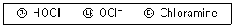
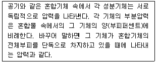
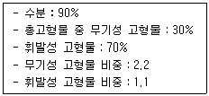
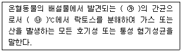
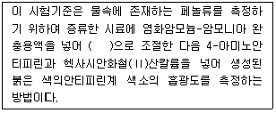
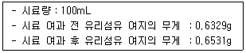

수질환경산업기사 (2014-08-17 기출문제)
1과목: 수질오염개론
1. 암모니아성 질소 42mg/L와 아질산성질소 14mg/L가 포함된 폐수를 완전 질산화시키기 위한 산소요구량은?
- 135mgO2/L
- 174mgO2/L
- 208mgO2/L
- 232mgO2/L
(정답률: 66%)

2. 어떤 폐수의 BOD5가 100mg/L이고, 10을 밑으로 한 탈산소계수(K1)가 0.1/day라면 BOD3 및 BODu는?
- BOD3：64mg/L, BODu：123mg/L
- BOD3：73mg/L, BODu：126mg/L
- BOD3：64mg/L, BODu：143mg/L
- BOD3：73mg/L, BODu：146mg/L
(정답률: 85%)
3. 어느 공장에서 BOD 200mg/L인 폐수 500m3/day를 BOD 4mg/L, 유량 200,000m3/day의 하천에 방류할 때 합류점의 BOD(mg/L)는?
- 4.20
- 4.49
- 4.72
- 4.84
(정답률: 79%)
4. Bacteria(C5H7O2N) 10g의 이론적인 COD값(g)은? (단, 반응생성물은 CO2, H2O, NH3이다.)
- 10.2
- 12.2
- 14.2
- 16.2
(정답률: 86%)
5. 물의 물리적 성질을 나타낸 것으로 옳지 않은 것은?
- 비열 1.0 cal/g(20℃)
- 표면장력 72.75 dyne/cm(20℃)
- 비저항 2.5 × 107Ω·cm
- 기화열 539.032 cal/g(100℃)
(정답률: 67%)
6. CH3COOH 150mg/L를 함유하고 있는 용액의 pH는? (단, CH3COOH의 이온화상수 Ka=1.8 × 10-5)
- 3.2
- 3.7
- 4.2
- 4.7
(정답률: 65%)
7. 해수의 주요성분 중 Cl-, Na+ 다음으로 가장 많이 함유되어 있는 것은?
- SO42-
- HCO3-
- Ca2+
- K+
(정답률: 67%)
8. [H+] = 5.0 × 10-6mol/L인 용액의 pH는?
- 5.0
- 5.3
- 5.6
- 5.9
(정답률: 80%)
9. 음용수를 염소 소독할 때 살균력이 강한 것부터 순서대로 옳게 배열된 것은? (단, 강함 ＞ 약함)

- ㉮ ＞ ㉯ ＞ ㉰
- ㉯ ＞ ㉰ ＞ ㉮
- ㉯ ＞ ㉮ ＞ ㉰
- ㉮ ＞ ㉰ ＞ ㉯
(정답률: 90%)
10. 탈질미생물에 관한 설명으로 옳지 않은 것은?
- 최적 pH는 6~8 정도이다.
- 탈질균 대부분은 통성 혐기성균으로 호기, 혐기 어느 상태에서도 증식이 가능하다.
- 유기물을 에너지원으로 한다.
- 탈질시 알칼리도가 소모된다.
(정답률: 59%)
11. 호소의 성층현상에 관한 설명으로 옳지 않은 것은?
- 여름에는 연직 온도경사는 DO구배와 같은 모양을 나타낸다.
- 겨울이 여름보다 수심에 따른 수온차가 더 커져 호소는 더욱 안정된 성층현상이 일어난다.
- 봄과 가을에 수직적으로 전도현상이 일어난다.
- 계절의 변화에 따라 수온차에 의한 밀도차로 수층이 형성된다.
(정답률: 86%)
12. Formaldehyde(CH2O)의 COD/TOC의 비는?
- 2.67
- 2.88
- 3.37
- 3.65
(정답률: 82%)
13. 다음이 설명하고 있는 기체법칙은?

- Dalton의 부분압력법칙
- Henry의 부분압력법칙
- Avogadro의 부분압력법칙
- Boyle의 부분압력법칙
(정답률: 90%)
14. 초기농도가 100mg/L인 오염물질의 반감기가 10day라고 할 때 반응속도가 1차 반응을 따를 경우 5일 후 오염물질의 농도(mg/L)는?
- 70.7 mg/L
- 75.7 mg/L
- 80.7 mg/L
- 85.7 mg/L
(정답률: 70%)
15. 마그네슘 경도 200mg/L as CaCO3를 Mg2+의 농도로 환산하면 얼마인가? (단, Mg 원자량：24)
- 36mg/L
- 48mg/L
- 60mg/L
- 72mg/L
(정답률: 74%)
16. 미생물 세포를 C5H7O2N이라고 하면 세포 5kg당의 이론적인 공기소모량은? (단, 완전산화 기준이며 분해 최종산물은 CO2, H2O, NH3, 공기 중 산소는 23%(W/W)로 가정한다.)
- 약 27kg air
- 약 31kg air
- 약 42kg air
- 약 48kg air
(정답률: 79%)
17. 하천수 수온은 10℃이다. 20℃ 탈산소계수 K(상용대수)가 0.1day-1이라면 최종 BOD와 BOD4의 비(BOD4/BODu)는? (단, KT = K20 × 1.047(T-20))
- 0.75
- 0.64
- 0.52
- 0.44
(정답률: 72%)
18. 0.01N NaOH 용액의 농도는 몇 %인가? (단, Na：23)
- 0.2
- 0.4
- 0.02
- 0.04
(정답률: 65%)
19. Glucose(C6H12O6) 360mg/L가 완전 산화하는 데 필요한 이론적 산소요구량(ThOD)은?
- 384mg/L
- 392mg/L
- 407mg/L
- 416mg/L
(정답률: 84%)
20. 농도가 A인 기질을 제거하기 위하여 반응조를 설계하고자 한다. 요구되는 기질의 전환율이 90%일 경우 회분식 반응조의 체류시간(hr)은?(단, 기질의 반응은 1차 반응이며, 반응상수 K는 0.35/hr이다.)
- 6.6
- 8.6
- 10.6
- 12.6
(정답률: 55%)
2과목: 수질오염방지기술
21. 물리ㆍ화학적 질소제거공정인 파괴점 염소주입법의 장단점으로 옳지 않은 것은?
- 적절한 운전으로 모든 암모니아성 질소의 산화가 가능하다.
- 고도의 질소제거를 위하여 여타 질소제거공정 다음에 사용 가능하다.
- 기존 시설에 적용이 용이하다.
- 염소 주입으로 유출수 내 TDS 농도가 감소한다.
(정답률: 59%)
22. 함수율 95%의 슬러지를 함수율 75%의 탈수케익으로 만들었을 때 탈수 후 체적은 탈수 전 체적에 비하여 얼마로 되겠는가? (단, 분리액으로 유출된 슬러지양은 무시하며 비중은 1.0 기준)
- 1/3
- 1/4
- 1/5
- 1/6
(정답률: 87%)
23. 유입하수량이 20,000m3/day, 유입 BOD가 200mg/L, 폭기조 용량이 1,000m3, 폭기조 내 MLSS가 1,750mg/L, BOD 제거율이 90%이고, BOD의 세포합성율이 0.55이며, 슬러지의 자기산화율이 0.08/day일 때, 잉여슬러지 발생량(kg/day)은?
- 1,680 kg/day
- 1,720 kg/day
- 1,840 kg/day
- 1,920 kg/day
(정답률: 65%)
24. BOD 1kg 제거에 필요한 산소량이 1kg이며 공기 1m3에 함유되어 있는 산소량이 0.277kg이고 활성슬러지에서 공기용해율이 4%(부피%)라 할 때 BOD 5kg을 제거하는 데 필요한 공기용량은? (단, 기타 조건은 고려하지 않음)
- 451m3
- 554m3
- 632m3
- 712m3
(정답률: 65%)
25. 유량이 15,000m3/day인 공장폐수를 활성슬러지공법으로 처리하고자 한다. 포기조 유입수의 BOD 및 SS 농도가 각각 250mg/L이며 BOD 및 SS의 처리효율은 각각 90%, F/M(kgBOD/kgMLSSday)비는 0.2, 포기시간은 8시간, 반송슬러지의 SS농도는 0.8%인 경우에 슬러지의 반송율(%)은?
- 82
- 87
- 92
- 94
(정답률: 38%)
26. 유량이 20,000m3/day, 체류시간 3시간인 침전지의 수면적 부하율(m3/m2·day)은? (단, 침전지 수심은 3m이다.)
- 20
- 22
- 24
- 26
(정답률: 67%)
27. 침사지에서 직경이 10-2mm이고 비중이 2.65인 모래 입자의 20℃인 물속에서의 침강속도(cm/sec)는? (단, 물의 밀도：1g/cm3, 점성계수：0.01g/sec-cm)
- 8.98 × 10-2
- 4.49 × 10-2
- 8.98 × 10-3
- 4.49 × 10-3
(정답률: 69%)
28. 연속회분식 활성슬러지법의 특징으로 옳지 않은 것은?
- 운전방식에 따라 사상균 벌킹을 방지할 수 있다.
- 침전 및 배출공정은 포기가 이루어지지 않은 상황에서 이루어짐으로 보통의 연속식 침전지와 비교해 스컴 등의 잔류 가능성이 높다.
- 저부하형의 경우 다른 처리방식과 비교하여 적은 부지면적에 시설을 건설할 수 있다.
- 활성슬러지 혼합액을 이상적인 정치상태에서 침전시켜 고액분리가 원활히 행해진다.
(정답률: 60%)
29. 평균유속이 0.5m/sec, 유효수심이 2.0m, 수면적부하가 2,000m3/m2⋅day인 조건에 적합한 침사지의 체류시간(sec)은?
- 약 90 sec
- 약 180 sec
- 약 270 sec
- 약 360 sec
(정답률: 47%)
30. 표준상태에서 1.5kg의 Glucose(C6H12O6)로부터 발생 가능한 CH4 가스량(L)은? (단, 혐기성 분해 기준)
- 410L
- 560L
- 660L
- 720L
(정답률: 67%)
31. 여과면적 18m2의 진공여과기로 고형물 농도 100g/L의 슬러지를 10m3/day 탈수 처리하고자 한다. 여과 전에 고형물 농도의 30%를 응집제로 첨가했다면 여과기 산출량(kg/hr·m2)은? (단, 고형물 기준, 연속가동 기준, 탈수 여액의 농도는 고려하지 않음)
- 1.8
- 2.3
- 2.7
- 3.0
(정답률: 48%)
32. 하수 유입수의 BOD5가 180mg/L, 유출수의 BOD5가 10mg/L인 활성슬러지 공정이 폭기조 용적 2,000m3, MLSS 2,000mg/L, 반송슬러지 SS농도 8,000mg/L, 고형물 체류시간은 5일로 운전되고 있다. 방류수의 SS농도는 무시하고 고형물 체류시간을 5일로 유지하기 위해 폐기하는 슬러지량(m3/day)은?
- 50
- 100
- 150
- 200
(정답률: 40%)
33. 폭 2m, 길이 15m인 침사지에 100cm의 수심으로 폐수가 유입할 때 체류시간이 50초라면 유량(m3/hr)은?
- 2,025
- 2,160
- 2,240
- 2,530
(정답률: 76%)
34. 생물학적 인 제거를 위한 A/O 공정에 관한 내용으로 옳지 않은 것은?
- 타 공법에 비하여 운전이 비교적 간단하다.
- 폐슬러지 내 인의 함량이 비교적 높고 (3~5%)비료의 가치가 있다.
- 낮은 BOD/P비 조건이 요구된다.
- 추운 기후의 운전조건에서 성능이 불확실하다.
(정답률: 77%)
35. 활성슬러지 변법 중 Step aeration법의 반응조 후단에 MLSS 농도(mg/L) 범위로 가장 옳은 것은? (단, F/M비, 반응조 수심, 반응조 형상은 표준활성 슬러지법과 같고 HRT 4~6시간, 체류시간은 3~6일이다.)
- 500 ~ 1,000
- 1,000 ~ 1,500
- 1,500 ~ 2,500
- 2,500 ~ 3,500
(정답률: 51%)
36. 1일 2,270m3을 처리하는 1차 처리시설에서 생슬러지를 분석한 결과 다음과 같은 자료를 얻었다. 이 슬러지의 비중은?

- 1.012
- 1.018
- 1.023
- 1.034
(정답률: 64%)
37. UV를 이용한 하수 소독방법에 관한 내용으로 옳지 않은 것은?
- 자외선의 강한 살균력으로 바이러스에 대해 효과적으로 작용한다.
- 물이 혼탁하거나 탁도가 높으면 소독능력에 영향을 미친다.
- 유량 및 수질의 변동에 대해 적응력이 약하다.
- pH 변화에 관계없이 지속적인 살균이 가능하다.
(정답률: 53%)
38. 길이 23m, 폭 8m, 깊이 2.3m인 직사각형 침전지가 3,000m3/day의 하수를 처리한다면 표면부하율(m/day)은?
- 20.6
- 16.3
- 10.5
- 33.4
(정답률: 82%)
39. BOD 150mg/L, 폐수량 1,000m3/day 인 폐수를 250m3의 유효용량을 가진 포기조로 처리할 경우의 BOD 용적부하(kg/m3·day)는?
- 0.2
- 0.4
- 0.6
- 0.8
(정답률: 65%)
40. 어떤 폐수를 응집처리하기 위해 시료 200mL를 취하여 Jar-test한 결과 Alum：300mg/L에서 가장 양호한 결과를 얻었다. 폐수량 2,000m3/day를 처리하는 데 하루에 필요한 Alum의 양(kg/day)은?
- 450
- 600
- 750
- 900
(정답률: 69%)
3과목: 수질오염공정시험방법
41. 수질오염공정시험기준의 총칙에 관한 설명으로 옳지 않은 것은?
- 온도의 영향이 있는 실험결과 판정은 표준온도를 기준으로 한다.
- 찬 곳은 따로 규정이 없는 한 0~ 15℃의 곳을 뜻한다.
- “수욕상 또는 수욕 중에서 가열한다”라 함은 따로 규정이 없는 한 수온 100℃에서 가열함을 뜻하고 약 100℃의 증기욕을 쓸 수 있다.
- 냉수는 15℃ 이하, 온수는 50~60℃, 열수는 약 100℃를 말한다.
(정답률: 72%)
42. 퇴적물채취에 사용되는 에크만그랩(ekman grab)에 관한 설명으로 틀린 것은?
- 물의 흐름이 거의 없는 곳에서 채취가 잘되는 채취기이다.
- 채취기가 바닥에 닿아 줄의 장력이 감소하면 아래 날이 닫히도록 되어 있다.
- 채집면적이 좁고 조류가 센 곳에서는 바닥에 안정시키기 어렵다.
- 가벼워 휴대가 용이하고 작은 배에서 손쉽게 사용할 수 있다.
(정답률: 73%)
43. 측정항목별 시료보존방법으로 가장 거리가 먼 것은?
- 페놀류：H2SO4로 pH 2 이하로 조정한 후 CuSO4 1g/L를 첨가하여 4℃에서 보존한다.
- 노말헥산추출물질：H2SO4로 pH 2 이하로 하여 4℃에서 보관한다.
- 암모니아성 질소：H2SO4로 pH 2 이하로 하여 4℃에서 보관한다.
- 황산이온：6℃ 이하에서 보관한다.
(정답률: 50%)
44. 적정법을 이용한 염소이온의 측정시 적정의 종말점으로 옳은 것은?
- 엷은 적황색 침전이 나타날 때
- 엷은 적갈색 침전이 나타날 때
- 엷은 청록색 침전이 나타날 때
- 엷은 황갈색 침전이 나타날 때
(정답률: 68%)
45. 분원성 대장균군의 정의이다. ( ) 안에 내용으로 옳은 것은?

- ㉮ 그람음성·무아포성, ㉯ 44.5
- ㉮ 그람양성·무아포성, ㉯ 44.5
- ㉮ 그람음성·아포성, ㉯ 35.5
- ㉮ 그람양성·아포성, ㉯ 35.5
(정답률: 66%)
46. 6가크롬의 자외선/가시선 분광법 시험방법에 관한 설명으로 옳지 않은 것은?
- 산성 용액에서 다이페닐카바자이드와 반응시켜 착화합물을 생성시킨다.
- 흡광도를 540nm에서 측정·정량한다.
- 간섭물질이 존재하는 경우 수산나트륨 1%를 첨가하여 측정한다.
- 적자색의 착화합물 흡광도를 정량한다.
(정답률: 70%)
47. 납(Pb)의 정량방법 중 자외선/가시선분광법에 사용되는 시약이 아닌 것은?
- 에틸렌디아민 용액
- 사이트르산이암모늄 용액
- 암모니아수
- 시안화칼륨 용액
(정답률: 47%)
48. 질산성 질소 분석방법과 가장 거리가 먼 것은?
- 이온크로마토그래피법
- 자외선/가시선 분광법 - 부루신법
- 자외선/가시선 분광법 - 활성탄흡착법
- 연속흐름법
(정답률: 67%)
49. 수로의 폭이 0.5m인 직각 3각위어의 수두가 0.25m일 때 유량(m3/min)은? (단, 유량계수는 80)
- 2.0
- 2.5
- 3.0
- 3.5
(정답률: 77%)
50. 개수로에 의한 유량 측정시 평균유속은 Chezy의 유속공식을 적용한다. 여기서 경심에 대한 설명으로 옳은 것은?
- 유수단면적을 윤변으로 나눈 것을 말한다.
- 윤변에서 유수단면적을 뺀 것을 말한다.
- 윤변과 유수단면적을 곱한 것을 말한다.
- 윤변과 유수단면적을 더한 것을 말한다.
(정답률: 81%)
51. 실험에 관련된 용어의 정의로 틀린 것은?
- 밀봉용기：취급 또는 저장하는 동안에 밖으로부터의 공기 또는 다른 가스가 침입하지 아니하도록 내용물을 보호하는 용기를 말한다.
- 정밀히 단다：규정된 양의 시료를 취하여 화학저울 또는 미량저울로 칭량함을 말한다.
- 정확히 취하여：규정한 양의 액체를 부피피펫으로 눈금까지 취하는 것을 말한다.
- 냄새가 없다：냄새가 없거나, 또는 거의 없는 것을 표시하는 것이다.
(정답률: 78%)
52. 다음은 수질 측정항목과 최대보존기간을 짝지은 것이다. 잘못 연결된 것은? (단, 항목 - 최대보존기간)
- 색도 - 48시간
- 6가크롬 - 24시간
- 비소 - 6개월
- 유기인 - 28일
(정답률: 79%)
53. 다음은 페놀류를 자외선/가시선 분광법을 적용하여 분석할 때에 관한 내용이다. ( ) 안에 옳은 것은?

- pH 8
- pH 9
- pH 10
- pH 11
(정답률: 75%)
54. 기체크로마토그래피법으로 측정하지 않는 항목은?
- 폴리클로리네이티드비페닐
- 유기인
- 비소
- 알킬수은
(정답률: 51%)
55. 자외선/가시선 분광법에 의한 시안 정량 분석시, 간섭물질로 작용하는 시료 중 황화합물을 제거하는 데 사용되는 시약은?
- 과망간산칼륨 용액
- 아황산나트륨 용액
- 피리딘-피라졸론 용액
- 아세트산아연 용액
(정답률: 45%)
56. 유량 측정시 사용되는 위어판에 관한 설명으로 틀린 것은?
- 위어판의 재료는 3mm 이상의 두께를 갖는 내구성이 강한 철판으로 한다.
- 위어판의 내면은 평면이어야 한다.
- 위어판 안측의 가장자리는 직선이어야 한다.
- 위어판의 크기는 수로의 붙인 틀의 크기에 맞추고 절단의 크기는 따로 정하지 않는다.
(정답률: 80%)
57. 시료의 전처리방법(산분해법) 중 유기물 등을 많이 함유하고 있는 대부분의 시료에 적용하는 것은?
- 질산법
- 질산-염산법
- 질산-황산법
- 질산-과염소산법
(정답률: 63%)
58. 폐수 중의 부유물질을 측정하고자 실험을 하여 다음과 같은 결과를 얻었다. 폐수 중 부유물질의 양(mg/L)은?

- 202
- 221
- 231
- 241
(정답률: 75%)
59. 금속류인 망간 측정방법이 아닌 것은? (단, 수질오염공정시험기준 기준)
- 원자흡수분광광도법
- 기체크로마토그래피법
- 유도결합플라스마－질량분석법
- 유도결합플라스마－원자발광분광법
(정답률: 67%)
60. 다음 분석방법 중 아연을 분석할 수 없는 분석방법은? (단, 수질오염공정시험기준 기준)
- 원자흡수분광광도법
- 원자형광법
- 자외선/가시선 분광법
- 양극벗김 전압전류법
(정답률: 57%)
4과목: 수질환경관계법규
61. 폐수처리업의 등록기준 중 폐수재이용업의 기술능력기준으로 옳은 것은?
- 수질환경산업기사, 화공산업기사 중 1명 이상
- 수질환경산업기사, 대기환경산업기사, 화공산업기사 중 1명 이상
- 수질환경기사, 대기환경기사 중 1명 이상
- 수질환경산업기사, 대기환경기사 중 1명 이상
(정답률: 88%)
62. 다음 용어의 뜻으로 틀린 것은?
- 폐수：물에 액체성 또는 고체성의 수질 오염물질이 섞여 있어 그대로 사용할 수 없는 물을 말하다.
- 수질오염물질：수질오염의 요인이 되는 물질로서 환경부령으로 정하는 것을 말한다.
- 불투수층：빗물 또는 눈 녹은 물 등이 지하로 스며들 수 없게 하는 아스팔트, 콘크리트 등으로 포장된 도로, 주차장, 보도 등을 말한다.
- 강우유출수：점오염원 및 비점오염원의 수질오염물질이 섞여 유출되는 빗물 또는 눈 녹은 물 등을 말한다.
(정답률: 86%)
63. 비점오염원 관리지역에 대한 설명 중 틀린 것은?
- 환경부장관은 비점오염원에서 유출되는 강우유출수로 인해 하천·호소 등의 이용목적, 주민의 건강·재산이나 자연생태계에 중 대한 위해가 발생하거나 발생할 우려가 있는 지역에 대해 관할 시ㆍ도지사와 협의하여 비점오염원 관리지역을 지정할 수 있다.
- 시ㆍ도지사는 관할구역 중 비점오염원의 관리가 필요하다고 인정되는 지역에 대해 환경부장관에게 관리지역으로의 지정을 요청할 수 있다.
- 관리지역의 지정기준, 지정절차, 그 밖의 필요한 사항은 환경부령으로 정한다.
- 환경부장관은 관리지역의 지정사유가 없어졌거나 목적을 달성할 수 없는 등 지정의 해제가 필요하다고 인정되는 경우에는 관리지역의 전부 또는 일부에 대하여 그 지정을 해제할 수 있다.
(정답률: 81%)
64. 수질오염물질의 배출허용기준 중 틀린 것은?
- 1일 폐수배출량이 2,000m3 미만인 경우 BOD 기준은 청정지역과 가 지역은 각각 40mg/L 이하, 80mg/L이하이다.
- 1일 폐수배출량이 2,000m3 미만인 경우 COD 기준은 나 지역과 특례지역은 각각 130mg/L 이하, 40mg/L 이하이다.
- 1일 폐수배출량이 2,000m3 이상인 경우 BOD 기준은 청정지역과 가 지역은 각각 30mg/L 이하, 60mg/L 이하이다.
- 1일 폐수배출량이 2,000m3 이상인 경우 COD 기준은 청정지역과 가 지역은 각각 50mg/L 이하, 90mg/L 이하이다.
(정답률: 60%)
65. 대권역 수질 및 수생태계 보전계획에 포함되어야 하는 사항과 가장 거리가 먼 것은?
- 상수원 및 물 이용현황
- 점오염원, 비점오염원 및 기타 수질오염원별 수질오염 저감시설 현황
- 점오염원, 비점오염원 및 기타 수질오염원별 수질오염원의 분포현황
- 점오염원, 비점오염원 및 기타 수질오염원에서 배출되는 수질오염물질의 양
(정답률: 75%)
66. 시ㆍ도지사 등이 환경부장관에게 보고할 사항(위임업무 보고사항) 중 보고횟수가 연 4회에 해당되는 것은?
- 과징금 징수실적 및 체납처분현황
- 폐수위탁·사업장 내 처리현황 및 처리실적
- 배출부과금 징수실적 및 체납처분 현황
- 비점오염원의 설치신고 및 방지시설 설치현황 및 행정처분현황
(정답률: 67%)
67. 다음의 수질오염방지시설 중 화학적 처리시설에 해당되는 것은?
- 접촉조
- 살균시설
- 안정조
- 폭기시설
(정답률: 83%)
68. 자연형 비점오염저감시설의 종류가 아닌 것은?
- 여과형 시설
- 인공습지
- 침투시설
- 식생형 시설
(정답률: 82%)
69. 2회 연속채취시 클로로필-a 농도 15mg/m3 이상이고, 남조류 세포 수 500세포/mL 이상인 경우의 수질오염 경보단계는? (단, 조류경보 기준)
- 조류주의보
- 조류경보
- 조류경계
- 조류대발생
(정답률: 64%)
70. 오염할당사업자 등에 대한 과징금 부과기준에서 사업장 규모별 부과계수로 옳은 것은?
- 제1종 사업장 3.0
- 제2종 사업장 2.0
- 제3종 사업장 1.0
- 제4종 사업장 0.5
(정답률: 63%)
71. 환경부장관이 설치ㆍ운영하는 측정망의 종류에 해당되지 않는 것은?
- 비점오염원에서 배출되는 비점오염물질 측정망
- 공공수역 유해물질 측정망
- 퇴적물 측정망
- 도심하천 측정망
(정답률: 72%)
72. 오염총량관리기본방침에 포함되어야 하는 사항과 가장 거리가 먼 것은?
- 오염원의 조사 및 오염부하량 산정방법
- 오염부하량 총량 및 저감계획
- 오염총량관리의 대상 수질오염물질 종류
- 오염총량관리의 목표
(정답률: 52%)
73. 환경기술인을 교육하는 기관으로 옳은 곳은?
- 국립환경인력개발원
- 환경기술인협회
- 환경보전협회
- 한국환경공단
(정답률: 77%)
74. 환경부장관은 비점오염원 관리지역을 지정ㆍ고시한 때에는 비점오염원 관리대책을 관계 중앙행정기관의 장 및 시ㆍ도지사와 협의하여 수립하여야 한다. 다음 중 비점오염원 관리대책에 포함되어야 하는 사항과 가장 거리가 먼 것은?
- 관리대상 수질오염물질 발생시설 현황
- 관리대상 수질오염물질의 종류 및 발생량
- 관리대상 수질오염물질의 발생 예방 및 저감방안
- 관리목표
(정답률: 68%)
75. 환경기준 중 수질 및 수생태계(하천)의 생활환경기준으로 옳지 않은 것은? (단, 등급은 매우 나쁨(Ⅵ) 있다.)
- COD：11mg/L 초과
- T-P：0.5mg/L 초과
- SS：100mg/L 초과
- BOD：10mg/L 초과
(정답률: 74%)
76. 환경부장관이 공공수역을 관리하는 자에게 수질 및 수생태계의 보전을 위해 필요한 조치를 권고하려는 경우 포함되어야 할 사항과 가장 거리가 먼 것은?
- 수질 및 수생태계를 보전하기 위한 목표에 관한 사항
- 수질 및 수생태계에 미치는 중대한 위해에 관한 사항
- 수질 및 수생태계를 보전하기 위한 구체적인 방법
- 수질 및 수생태계의 보전에 필요한 재원의 마련에 관한 사항
(정답률: 84%)
77. 사업자 및 배출시설과 방지시설에 종사하는 사람은 배출시설과 방지시설의 운영ㆍ관리를 위한 환경기술인의 업무를 방해하여서는 아니 되며 그로부터 업무 수행에 필요한 요청을 받았을 때에는 정당한 사유가 없으면 이에 따라야 한다. 이를 위반하여 환경기술인의 업무를 방해하거나 환경기술인의 요청을 정당한 사유 없이 거부한 자에 대한 벌칙 기준은?
- 100만원 이하의 벌금
- 200만원 이하의 벌금
- 300만원 이하의 벌금
- 500만원 이하의 벌금
(정답률: 85%)
78. 비점오염원의 변경신고를 하여야 하는 경우에 대한 기준으로 옳은 것은?
- 총 사업면적, 개발면적 또는 사업장 부지면적이 처음 신고면적의 100분의 10 이상 증가하는 경우
- 총 사업면적, 개발면적 또는 사업장 부지면적이 처음 신고면적의 100분의 15 이상 증가하는 경우
- 총 사업면적, 개발면적 또는 사업장 부지면적이 처음 신고면적의 100분의 25 이상 증가하는 경우
- 총 사업면적, 개발면적 또는 사업장 부지면적이 처음 신고면적의 100분의 30 이상 증가하는 경우
(정답률: 86%)
79. 수질오염경보 중 조류경보에서 '조류경보' 단계 발령시 조치사항에 해당되지 않는 것은? (단, 취수장, 정수장 관리자 기준)
- 취수구와 조류가 심한 지역에 대한 방어막 설치 등 조류 제거조치 실시
- 정수의 독소분석 실시
- 조류증식 수심 이하로 취수구 이동
- 정수처리 강화(활성탄 처리, 오존처리)
(정답률: 83%)
80. 공동처리구역에서 배출시설을 설치하고자 하는 자 및 폐수를 배출하고자 하는 자 중 대통령령으로 정하는 자는 해당 사업장에서 배출되는 폐수를 폐수 종말처리시설에 유입하여야 하며, 이에 필요한 배수관거 등 배수설비를 설치하여야 한다. 이 배수설비의 설치방법, 구조기준에 관한 내용으로 옳지 않은 것은?
- 시간당 최대폐수량이 일평균 폐수량의 2배 이상인 사업자는 자체적으로 유량조정조를 설치하여야 한다.
- 순간수질과 일평균 수질과의 격차가 리터당 100밀리그램 이상인 시설의 사업자는 자체적으로 유량조정조를 설치하여야 한다.
- 배수관 입구에는 유효간격 1.0밀리미터 이하의 스크린을 설치하여야 한다.
- 배수관의 관경은 내경 150밀리미터 이상으로 하여야 한다.
(정답률: 74%)
TCOD = BOD + COD
따라서, TCOD = 42mg/L + 14mg/L = 56mg/L 이다.
완전 질산화시키기 위해서는 모든 질소가 질산으로 변환되어야 하므로, 산소가 질산화 반응에 참여하는데 필요한 양보다 더 많은 산소가 필요하다. 이를 위해 일반적으로 TCOD의 4~5배 정도의 산소가 필요하다고 알려져 있다.
따라서, 산소요구량은 56mg/L x 4 = 224mgO2/L 이다.
보기에서 가장 가까운 값은 "208mgO2/L" 이므로 정답은 "208mgO2/L" 이다.